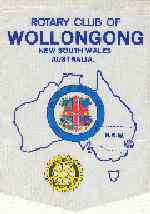

|
|
| SEARCH |
Rotary Club of Wollongong |
| District 9750 |
|
Following the formation of Sydney Club in 1921, and the
subsequent sponsoring of Newcastle (1923) and Parramatta (1926), it
seemed only by natural sequence that the Rotary movement should extend
to Wollongong. About the beginning of 1927, Fred Burley, a very keen
Sydney Club Rotarian, enthused local identities Percy Pratt and Charles
Jackson with the potential of Rotary for the area covering Port Kembla,
Wollongong and surrounding towns. The concept was received enthusiastically and an informal luncheon was held at 1.00 pm on 1 June 1927 at Miss Davies’ Charlton Café, downstairs on the south side of Crown Street, Wollongong. Present at the meeting were Bob Craig (Australian Fertilisers Ltd), Robbie Musgrave (Illawarra Mercury), Billy David (David’s Foundry), Vorn Wilson (Dentist), Waldo Lance (Lance’s), Bob Bevan (Real Estate), Noel Kirkwood (GP), Harry Wright (Commonwealth Bank), Jim Russell (Law), Jim Caddy (M.M. Ltd) and Sid Barber (Wollongong High School). Ben Gelling, Fred Burley and Bill Holden from Sydney Club guided the path of these intending members as there was no Rotary District or District Governor. Weekly meetings continued to be held, an application for Rotary status was made in July, official Rotary Charter was granted in September and preparations were made for Charter Night, which took place on 10 December 1927 in St. Michael's Parish Hall. On that night, ladies were present for the first time. Rotary in the 30s: This was a decade of rapid growth and momentous occasions in the life of the Club. In 1932, the Club was instrumental in the formation of Wollongong and District Children’s Society, and as each Rotary Club has come into existence in the area, it has in turn supported the Society. This commenced with the formation of Goulburn Club in 1930 (in conjunction with Canberra) and Nowra Club in 1935. Rotary in the 40s: This was a decade of service above self to ease the problems in a war torn world. In 1940, the sum of 12,000 pounds was raised to buy a Spitfire to help in the Battle of Britain. A continuous clothing drive took place over several years to dispatch clothing overseas. In 1947, the City of Greater Wollongong ‘Food for Britain’ was sponsored by Rotarians, and some 9 000 food parcels were packed and dispatched to Britain. These were distributed to the aged and invalid through Rotary International in Britain. Despite the problems of war, Rotary continued to thrive in the local area with Bowral Club sponsored in 1940, Port Kembla in 1946, Camden in 1947 and Bulli in 1948. Rotary in the 50s: With the Australian immigration policy under way, the Club rendered valuable to support the New Settler’s League in the assimilation of ‘new’ Australians. In 1953, the Club felt very proud when George Coghlan was elected District Governor nominee for the year 1953-54. In the same year, an appeal for a sub-normal children’s association was made and 8000 pounds was raised. In 1955, the lookouts and roads for access to the summit of Mt. Keira commenced. Built against formidable odds, these stand as one of the Club’s greatest achievements. Bush walks and amenities were provided and the area is now recognised as having some of the finest views in the world. The Rotary family tree continued to grow with Kiama being sponsored in 1952 and Dapto in 1959. Rotary in the 60s: This was a decade during which Rotary did a great deal for youth in the community with debating competitions, Eisteddfod prizes, scholarship awards and careers information programs all strongly supported. Presidents Bill Dyer, Bill Kelly and Russ Jones saw in their respective years the introduction of Interact, Code and Rotaract Clubs. Annual golf days became big charity occasions. The International House appeal was very successful, and Rotary Park became a major project. In 1964, the Rotary Club of West Wollongong was sponsored. Rotary in the 70s: The outstanding event in this period was the launching of the Television Hiring Scheme at Wollongong Hospital. It started with 10 fourteen-inch black and white sets mounted on trolleys so that they could be wheeled from room to room. The service continued for almost twenty years and raised nearly $150,000 worth of equipment for the hospital. In addition through Radio 2WL, a highly successful radiothon was conducted raising $56 000 for the complete refurbishment of the Children’s Ward at the Wollongong Hospital. This also continued for a number of years. Rotary in the 80s and 90s: The achievements and progress of the Rotary Club of Wollongong in the last twenty five years are best shown by the list of major projects which cover the four avenues of service:- · Interact – formed at Keira High School and still in existence · Inner Wheel – chartered in 1961 and providing further assistance to local charities · Probus – direct involvement in formation of five Clubs with associations to another ten · Group Study Exchange – involvement since 1980 with both incoming and outgoing teams · Youth Exchange – ten overseas students hosted and nine outgoing students supported since 1968 · Wollongong Hospital Auxiliary – operated for twenty years up to 1994 · Mt Keira Access – provision of access to summit overlooking south coast · Shopping Nights – operating since 1986 to provide special Christmas shopping night for elderly and disabled · Scout Camp – improvement and maintenance to buildings and surrounds · Girl Guide Camp – development and maintenance of area particularly after recent flood damage · Christmas Trailer Raffle – commenced in 1985 raising over $15,000 per year · Breakfast on the Beach – provision of a community breakfast since 1993 · Customs House - renovation of historic building on town foreshores · Carlennium – provision of breakfast for entrants and participation in fund raising activities for Shepherd Centre for deaf children · Tree Planting – McCabe Park, Bob Jessop Grove and Summit Tank come to mind, though more recently the development of Greenhouse Park as a major memorial to the Club’s 75th year in 2002/3 will convert a building tip to a green buffer zone between the industrial and commercial centres. |
| This page was compiled and provided by PDG John Louttit |
RGHF members, who have been invited to this page, may register RGHF members, who have been invited to this page, may register If a DGE/N/D joins prior to their year, they will have more exposure to Rotary's Global History by their service year. This will be beneficial to all concerned. *Based on paid members, subscribers, Facebook friends, Twitter followers, mobile app users, History Library users, web pages, and articles about Rotary's Global History RGHF Home | Disclaimer | Privacy | Usage Agreement | RGHF on Facebook | Subscribe | Join RGHF | |